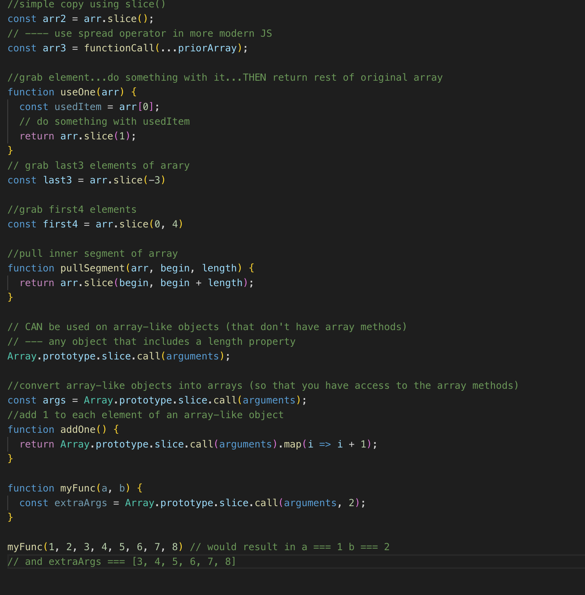
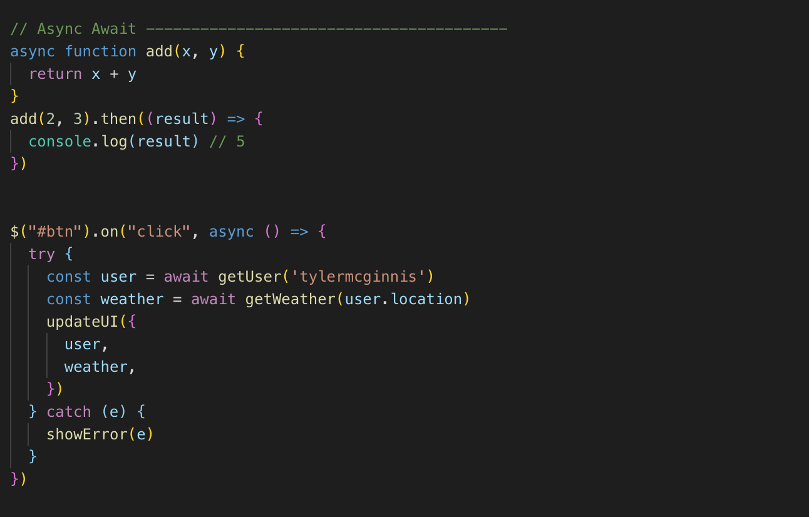
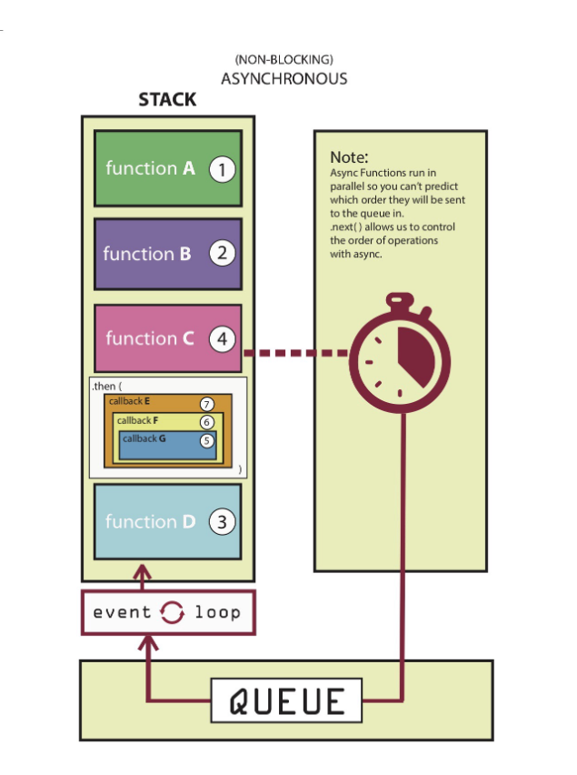
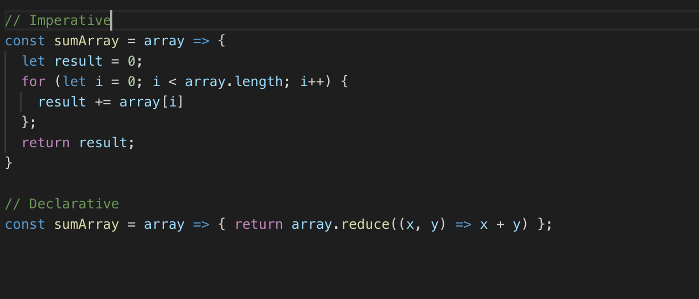
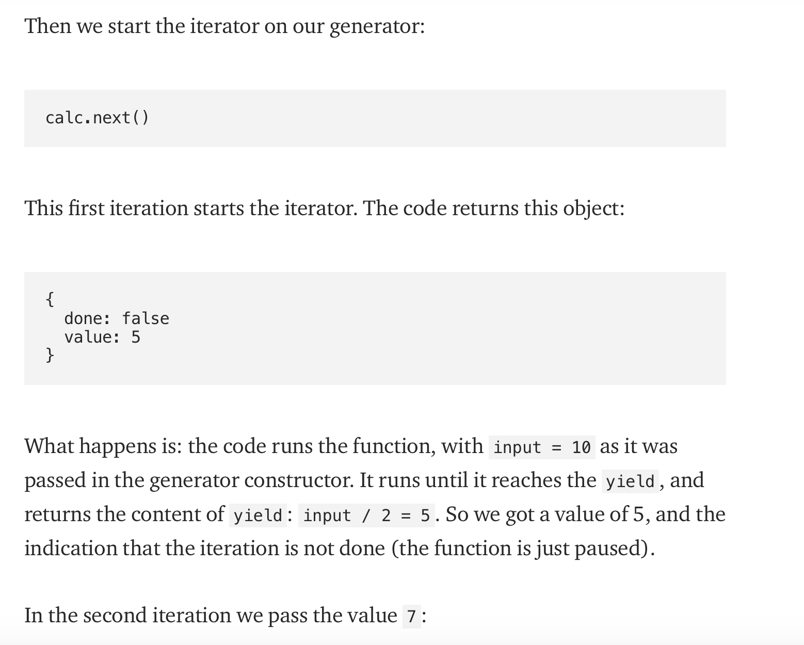

Useful JS Array Methods
const numbers = new Array(5); //creates array of length 5 with values set to undefined const numbers = Array.of(5); //this will create a numbers array containing the value 5 AND NOT 5 undefined values which was the case with new Array(5);
Array.from(arrayLike[, mapFn[, thisArg]]) The from() method creates a new instance of array from an array-like or iterable object.
const numbers = [1, 2, 3, 4, 5]; //Following code will create an array where each element is multiplied by 2 const copy = Array.from(numbers, value => value *2); console.log(copy); // [2, 4, 6, 8, 10];
In order to convert such iterable objects like HTMLCollection or NodeList (which is returned when we use document.querySelectorAll method), we can use Array.from method. Array.from(document.scripts).forEach(script => console.log(script.src));
Array.find(callback(element[, index[, array]])[, thisArg]) The find() method returns the value of the first element in the array that satisfies the provided test condition. The find() method takes a callback function as the first argument and execute the callback function for every element of the array. Each array element value is passed as the first paramter to callback function
const employee = employees.find(employee => employee.name.indexOf("John") > -1); console.log(employee); // { name: "John Cena", age: 34 } //will try to find employee of John and return the first element that matches
const index = employees.findIndex(employee => employee.name.indexOf("John") > -1); //returns the index of the first element in the array that satisfies the provided test condition. Otherwise it returns -1, indicating that no element passed the test.
Array.filter(callback(element[, index[, array]])[, thisArg]); The filter() method creates a new array with all the elements that satisfies the provided test condition. Note that, filter method always returns the array, If no element passed the test condition, an empty array will be returned.
Array.fill(value[, start[, end]]) THe fill() method fills (modifies) all the elements of an array from a start index (default zero) to an end index (default array length) with a static value. const checkboxes = new Array(5).fill(false);
Array.forEach(callback(currentValue [, index [, array]])[, thisArg]); const months = ["January", "February", "March", "April"]; const returnedValue = months.forEach(month => console.log(month)); // January February March April console.log("returnedValue: ", returnedValue); // undefined Note that, forEach is only used to loop through the array and perform some processing or logging, it does not return any value, even if you explicitly return value from the callback function so the returnedValue is coming as undefined.
Array.map(function callback(currentValue[, index[, array]]) { // Return element for new_array }[, thisArg]) const months = ["January", "February", "March", "April"]; const transformedArray = months.map(month => month.toUpperCase()); console.log(transformedArray); // ["JANUARY", "FEBRUARY", "MARCH", "APRIL"] //will return new array if use map const months = ["January", "February", "March", "April"]; const transformedArray = months.map(month => month.toUpperCase()); console.log(transformedArray); // ["JANUARY", "FEBRUARY", "MARCH", "APRIL"]
Array.every(callback(element[, index[, array]])[, thisArg]) The every() method tests whether all elements in the array pass the provided test condition and returns a boolean true or false value. Array.some(callback(element[, index[, array]])[, thisArg]) The some() method tests whether at least one element in the array passes the test condition given by the provided function and returns a boolean true or false value.
Array.reduce(callback(accumulator, currentValue[, index[, array]])[, initialValue]) The reduce() method executes a reducer function (that you provide) on each element of the array, resulting in a single output value. The output of reduce method is always a single value. It can be an object, a number, a string or an array etc. It depends on what you want the output of reduce method to generate but its always a single value.
filter unique values const array = [1, 1, 2, 3, 5, 5, 1] const uniqueArray = [...new Set(array)]; console.log(uniqueArray); // Result: [1, 2, 3, 5]
&& and || Using && will return the first false or ‘falsy’ value. If every operand evaluates to true , the last evaluated expression will be returned.
let one = 1, two = 2, three = 3; console.log(one && two && three); // Result: 3 console.log(0 && null); // Result: 0 let one = 1, two = 2, three = 3; console.log(one || two || three); // Result: 1 console.log(0 || null); // Result: null return (foo || []).length; If the variable foo is truthy, it will be returned. Otherwise, the length of the empty array will be returned: 0 if (this.state.data) { return this.state.data; } else { return 'Fetching Data'; } do this instead: return (this.state.data || 'Fetching Data');
Convert to boolean Unless otherwise defined, all values in Javascript are 'truthy' with the exception of 0, "", null, undefined, NaN and of course false, which are 'falsy' const isTrue = !0; const isFalse = !1; const alsoFalse = !!0; console.log(isTrue); // Result: true console.log(typeof true); // Result: "boolean"
Convert to string const val = 1 + ""; console.log(val); // Result: "1" console.log(typeof val); // Result: "string"
Convert to String const val = 1 + ""; console.log(val); // Result: "1" console.log(typeof val); // Result: "string"
Convert to Number let int = "15"; int = +int; console.log(int); // Result: 15 console.log(typeof int); Result: "number" console.log(+true); // Return: 1 console.log(+false); // Return: 0 There may be contexts where the + will be interpreted as the concatenation operator rather than the addition operator. When that happens (and you want to return an integer, not a float) you can instead use two tildes: ~~ . const int = ~~"15" console.log(int); // Result: 15 console.log(typeof int); Result: "number"
Quick Powers console.log(2**3); // Result: 8
Quick Float to Integer //The following expressions are equivalent: Math.pow(2, n); 2 << (n - 1); 2**n; For example, 2 << 3 = 16 is equivalent to 2 ** 4 = 16 . console.log(23.9 | 0); // Result: 23 console.log(-23.9 | 0); // Result: -23 If n is positive, n | 0 effectively rounds down. If n is negative, it effectively rounds up. To put it more accurately, this operation removes whatever comes after the decimal point, truncating a float to an integer. console.log(1553 / 10 | 0) // Result: 155 console.log(1553 / 100 | 0) // Result: 15 console.log(1553 / 1000 | 0) // Result: 1
Automatic Binding in Class We can use ES6 arrow notation in class methods, and by doing so binding is implied. This will often save several lines of code in our class constructor, and we can happily say goodbye to repetitive expressions such as this.myMethod = this.myMethod.bind(this)
Truncate an Array let array = [0, 1, 2, 3, 4, 5, 6, 7, 8, 9]; array.length = 4; console.log(array); // Result: [0, 1, 2, 3] let array = [0, 1, 2, 3, 4, 5, 6, 7, 8, 9]; array = array.slice(0, 4); console.log(array); // Result: [0, 1, 2, 3]
Last items from an array let array = [0, 1, 2, 3, 4, 5, 6, 7, 8, 9]; console.log(array.slice(-1)); // Result: [9] console.log(array.slice(-2)); // Result: [8, 9] console.log(array.slice(-3)); // Result: [7, 8, 9]
The stringify() method takes two optional parameters: a replacer function, which you can use to filter the JSON that is displayed, and a space value. The space value takes an integer for the number of spaces you want or a string (such as '\t' to insert tabs), and it can make it a lot easier to read fetched JSON data. console.log(JSON.stringify({ alpha: 'A', beta: 'B' }, null, '\t')); // Result: // '{ // "alpha": A, // "beta":
Better Programming in JS

ESLint is a tool for static code analysis. It is the most important tool that allows us to find potential issues within the codebase and ensure high quality of the codebase. The best part is that linting is a fully automated process and can be used to prevent the low-quality code from making its way into the codebase.
ES-LintES-Lint Configuration
ESLint rules into your project one-by-one as well. Configure them initially as warn, and once you’re comfortable, you can convert some of the rules into error.
In the root directory of your project run:
npm i -D eslint npm i -D eslint-plugin-fp
Then create a .eslintrc.yml file within the root directory of your project:
env: es6: true plugins: fp rules: # rules will go in here
You can also run ESLint manually from the command line: npx eslint .
rules: max-lines: - warn - 200 (sets the max lines to 200 for files)
advanced console commands
console.log({ foo, bar });
console.warn() & console.error()
console.group() can be used when grouping or nesting together relevant details to enable you to read the logs easily

Why 'this' is so powerful
“this” is a keyword used in JavaScript that has a special meaning depending on the context it’s being used
Context is always the value of the this keyword which is a reference to the object that “owns” the currently executing code.
Functions that sit in the global context (not as a method on an object) will point the ‘this’ keyword back to the Window object.
When “this” is inside an object, it refers to the object itself (returns the object itself)
Anytime you have an object nested inside another object, and then ‘this’ points to the object on which the method is defined.
this on Arrow functions returns window object(or global context). An arrow function expression has a shorter syntax than a function expression and does not have its own this, arguments, super, or new.target. These function expressions are best suited for non-method functions, and they cannot be used as constructors

However, if a function is executed in strict mode, ‘this’ will return undefined because strict mode does not allow default binding.

if you want to use ‘this’ in strict mode, ‘this’ must be defined by the execution context because ‘this’ is not automatically attached to any object (not even the Window object).
When ‘this’ is called from a function declared outside of an object

In this context, the function chase() returns undefined because when run in the global context, ‘this’ points to the window object by default and does not have the properties (‘breed’ or ‘lovesToChase’) defined on that object.
A constructor function allows us to define an object (like Number or String, except it has its own special properties and methods).
It’s important to note that ‘this’ does not have a value while in the constructor function.


The slice method provides a mechanism for creating a shallow copy of a subset of a list, without modifying the original list. Thus it provides a key building block for writing functional JavaScript.
The slice method is not to be confused with the splice method, which modifies an array in place
- Functional programming, particularly higher level functions, works heavily with lists of data.
- Functional programming requires pure functions, functions that do not cause side effects or modify their input data.
And with the rise of React and other functionally oriented JavaScript practices, it is becoming even more important, for 2 key reasons:
arr.slice([begin[, end]]);
The slice method creates a copy of the array starting at begin up to but not including end.
It also accepts negative indices, which indicate counts back from the end of the array.
Another huge area of use for slice is to manipulate arrays in a functional/pure way, without modifying the original array.
A powerful and common use of slice in a functional context is to replace the value of a particular item in an array. Imperatively this is simple, you just assign the new value, but in a functional world you can’t modify the original array.

Async JS

JavaScript is a single-threaded programming language which means only one thing can happen at a time. That is, the JavaScript engine can only process one statement at a time in a single thread.
While the single-threaded languages simplify writing code because you don’t have to worry about the concurrency issues, this also means you can’t perform long operations such as network access without blocking the main thread.
Using asynchronous JavaScript (such as callbacks, promises, and async/await), you can perform long network requests without blocking the main thread.
If giving the restaurant your number is like giving them a callback function, receiving
the little buzzy thing is like receiving what’s called a
Promise can be in one of three states, pending, fulfilled or rejected... they represent the status of an asynchronous request.
When you create a new Promise, you’re really just creating a plain old JavaScript object. This object can invoke two methods, then, and catch. Here’s the key. When the status of the promise changes to fulfilled, the function that was passed to .then will get invoked. When the status of a promise changes to rejected, the function that was passed to .catch will be invoked. What this means is that once you create a promise, you’ll pass the function you want to run if the async request is successful to .then. You’ll pass the function you want to run if the async request fails to .catch.

Chaining Both .then and .catch will return a new promise. That seems like a small detail but it’s important because it means that promises can be chained.

thread the data (users) from the first async request all the way through to the last .then.

Async / Await anytime you add async to a function, that function is going to implicitly return a promise.
Async is nothing more than syntactic sugar for promises
When you add async to a function it does two things. It makes it so the function itself returns (or wraps what gets returned in) a promise and makes it so you can use await inside of it.
With Async/Await... catch errors by wrapping in try / catch blocks generally.
a data structure which maps an event to a particular method. This data structure is the Event Table. But this event table only maps the method to an event and does not invoke the method itself. The event table instead sends the method to the Event Queue, and as the name suggests, it is a queue of methods to be executed in the correct order/sequence.
The event loop is basically an endless loop, which keeps on checking whether there is something to be executed in the call stack. If the call stack is empty it checks the Event Queue, whether there is something to move to the call stack. If there is a method present, it moves it to the call stack and the method gets executed.
the event loop is a process that runs endlessly and whose only job is to monitor and transfer methods to the call stack from the event queue.

Async event-loop with Promises


What’s the difference between imperative and declarative programming?
We can also think about the difference between OOP and FP in terms of the difference between “imperative” and “declarative” programming.
FP is an example of declarative programming, while OOP is an example of imperative programming.
In a basic sense, imperative programming is concerned with how you do something. It spells out the steps in the most essential way, and is characterised by for and while loops, if and switch statements, and so on.
By contrast, declarative programming is concerned with what to do, and it abstracts away the how by relying on expressions. This often results in more concise code, but at scale, it can become more difficult to debug because it’s that much less transparent. Here’s a declarative approach to our sumArray() function, above.
What is Prototype-Based Inheritance?
There are several different styles of Object-Oriented Programming, and the one JavaScript uses is Prototype-Based Inheritance. The system allows for repeated behaviour via the use of existing objects that serve as “prototypes”.
Even if the idea of prototypes is new to you, you will have encountered the prototype system by using in-built methods. For example, functions used to manipulate arrays such as map , reduce , splice and so on are all methods of the Array.prototype object. In fact, every instance of an array (defined using square brackets [], or — more unusually — using new Array()) inherits from Array.prototype , which is why methods like map , reduce and spliceare available by default.
The same is true of virtually every other built-in object, such as strings and booleans: only a few, such as Infinity , NaN , null and undefined have no properties or methods. At the end of the prototype chain we find Object.prototype , and almost every object in JavaScript is an instance of Object.prototype : Array.prototype and String.prototype , for example, both inherit properties and methods from Object.prototype . To add properties and methods to an object using prototype syntax, you can simply initiate the object as a function, and use the prototype keyword to add properties and methods:

Should I Override or Extend the Behaviour of Prototypes?
It’s possible to change the behaviour of built-in prototypes in exactly the same way that we can create and extend our own prototypes, but most developers (and most companies) would advise against this. If you want several objects to share the same behaviour, you can always create a custom object (or define your own ‘class’ or ‘subclass’) that inherits from a built-in prototype without making any changes to the prototype itself. If you’re going to be working with other developers, they’ll have certain expectations about JavaScript’s default behaviour, and editing this default behaviour can easily lead to errors. It’s worth noting, however, that not everyone shares this strong opposition to extending built-in prototypes. See, for example, this article from Brendan Eich, the creator of JavaScript. In this article (from 2005), Eich suggested that the prototype system in fact was built — in part — to make extensions possible!
Generator
MVC using ES6 Modules
Model
search.js
Recipe.js
Controller
ES6 index.js
View
searchView.js
recipeView.js
ES Modules
capitalize js Module
export default ' ';
... then in index.js ... import string from ' ./models/search'
import * as searchView from './views/searchView'; (imports an entire JS file)
local storage API
Web Storage API in console
saves k.v.p. in browser
localStorage.setItem()
localStorage.setItem('likes', JSON.stringify(this.likes));
can only save strings in local storage
const storage = JSON.parse(localStoragegetItem('key');